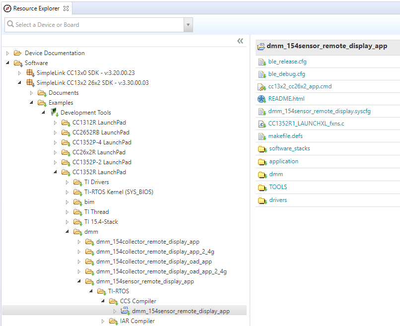

Dynamic Multi-protocol Manager Quick Start Guide¶
This section serves as a road map for users developing applications and products using the TI SimpleLink CC13xx or CC26xx wireless MCU platform for dynamic multi-protocol manager applications. Whether a seasoned developer or just getting started, TI has created a variety of resources to simplify development on the CC13xx or CC26xx platform. These resources will enhance your experience with the SimpleLink CC13xx/CC26xx SDK from the out-of-the-box demo to production.
To download the SimpleLink CC13xx/CC26xx SDK, please visit the download page: http://www.ti.com/tool/ SIMPLELINK-CC13XX-CC26XX-SDK.
Figure 111. shows the suggested work flow for getting started with TI’s SimpleLink Bluetooth Low Energy (BLE) development environment.
Figure 111. Suggested Workflow¶
Example Projects¶
For an overview of all the DMM example projects found in the SimpleLink CC13xx/CC26xx SDK, please see the Example Applications section of the DMM chapter. Here you will also find some notes on the example application design.
A quick and easy way to start working with the SDK is to use the TI Resource Explorer in CCS. Instructions for using IAR are found in the following section (Using DMM Projects with IAR).
Import Project Using Resource Explorer¶
This section describes how to import and build an existing project and
references the dmm_154sensor_remote_display project. All of the DMM projects
included in the development kit have a similar structure.
Open the CCS IDE.
Create a workspace.
Attention
Ensure that the CCS workspace path does not contain a whitespace.
Import a CCS Project using Resource Explorer
Open Resource Explorer (if not open already): View -> Resource Explorer
Navigate to the CCS folder for your chosen example: Software → SimpleLink CC13xx/CC26xx SDK → Examples → Development Tools → CC13xx or CC26xx LaunchPad → dmm → dmm_154sensor_remote_display → TI-RTOS → CCS Compiler → dmm_154sensor_remote_display
Figure 112. Import CCS Projects¶
Select the CCS Logo button to import project into Project Explorer
Attention
The import process will also install the SimpleLink CC13xx/CC26xx SDK if a local version does not exist. You must accept the End User License Agreement to proceed.

Figure 113. Install SimpleLink CC13xx/CC26xx SDK¶
After the installation finishes, you must reopen CCS before importing the project.
If everything is successful, the project should appear in Project Explorer: dmm_154sensor_remote_display.
Build and Download Project with CCS¶
To build and download a DMM project (e.g. dmm_154sensor_remote_display):
(Only for OAD enabled projects:) Flash the BIM hex file.
The hex file can be found in examples → nortos → CC13xx or CC26xx LaunchPad → bim → hexfiles → bim_offchip → Debug_unsecure
Use Smart RF Flash Programmer 2 or Uniflash to program the hex file.
Build the application project.
Set the application project as the active project.
Select Project -> Build All to build the Application project.
As part of the prebuild process, SysConfig will run and generate code based on the
.syscfgin the workspace. For more information on SysConfig, see the SysConfig chapter of the User’s Guide.
Load the application project
Select Run -> Debug to download the application
Before beginning execution, open a terminal window with the following settings:
UART Param |
Default Values |
|---|---|
Baud Rate |
115200 |
Data length |
8 bits |
Parity |
None |
Stop bits |
1 bit |
Flow Control |
None |
Projects that contain the TI Over-the-Air Download (OAD) Profile will require you to flash your device with the Boot Image Manager (BIM) hex file. This is the first step described in section Build and Download above. For more information on the TI OAD Profile and the BIM see the OAD Chapter of the BLE5-Stack User’s Guide.
Using DMM Projects with IAR¶
When building with IAR, it is recommended to enable all build messages. This can be done by right-clicking in the Build window and selecting “All” as shown below:

Figure 114. Enable All Build Messages¶
Warning
Standalone SysConfig tool must be installed in order to use all the IAR
projects and its location has to the same as specified by SYSCONFIG_ROOT.
The SysConfig standalone package can be found here: SysConfig Standalone Installer Download Page.
Import Project to IAR Using Workspace¶
This section describes how to open and build an existing project and references
the dmm_154sensor_remote_display project.
Before opening a workspace in IAR, make sure the correct global argument variables are used. Below you can see how to add and enable the SDK-global argument variables:

Figure 115. Select Configure Custom Argument Variables from the Tools menu¶
Figure 116. Click on Import… with the Global name space selected. The imported values will persist for other projects also.¶

Figure 117. Find the Custom Argument Variables file under <SDK_INSTALL_DIR>/tools/iar¶
Figure 118. Success! Change these paths if you have installed in a different location.¶
In addition, applications containing the TI Over-the-Air Download (OAD) Profile will also include the Boot Image Manager (BIM) project. For more information on the TI OAD Profile and the BIM see the OAD Chapter of the BLE5-Stack User’s Guide.
Note
If you have imported the global
<SDK_INSTALL_DIR>/tools/iar/SIMPLELINK_CC13XX_CC26XX_SDK.custom_argvars,
then the examples from the older SDK will fail to build. If this happens you
must remove this custom_argvars file from your IAR global custom arguments
and re-open that workspace again.
Open the IAR Embedded Workbench IDE from the Start Menu.
Open an IAR workspace project: File -> Open -> Workspace…
For this example, select
<SDK_INSTALL_DIR>\examples\rtos\<BOARD>\dmm\dmm_154sensor_remote_display\tirtos\iar\dmm_154sensor_remote_display_app_<BOARD>_tirtos_iar.template.eww
This will prompt you to select a folder location as a workspace for the project. Make sure you select an empty folder.
This workspace file is for the dmm_154sensor_remote_display project. When
selected, the files associated with the workspace become visible in the Workspace
pane on the left side of the screen.
Build and Download Project with IAR¶
To build and download a DMM project (e.g. dmm_154sensor_remote_display):
(Only for OAD enabled projects:) Flash the BIM hex file.
The hex file can be found in examples → nortos → CC13xx or CC26xx LaunchPad → bim → hexfiles → bim_offchip → Debug_unsecure
Use Smart RF Flash Programmer 2 or Uniflash to program the hex file.
Build the DMM application project.
Select the Application project.
Select Project -> Make to build the Application project.
As part of the prebuild process, SysConfig will run and generate code based on the
.syscfgin the workspace. For more information on SysConfig, see the SysConfig chapter of the User’s Guide.
Load the DMM application project
To download and debug: Select Project -> Download and Debug
- To download without debugging: Select Project -> Download ->
Download Active Application
Refer to each project README for more information about the project.
Before beginning execution, open a terminal window with the following settings:
UART Param |
Default Values |
|---|---|
Baud Rate |
115200 |
Data length |
8 bits |
Parity |
None |
Stop bits |
1 bit |
Flow Control |
None |
When the debugging session opens, click the start button to start execution.
Learning More About TI DMM¶
Resources contained in the Learn track of Figure 111. are intended for users who are new to DMM, protocol stacks such as BLE, or TI-RTOS. These modules demonstrate how to create custom applications with the DMM and TI’s Real Time Operation System (TI-RTOS).
SimpleLink Academy¶
SimpleLink Academy provides a comprehensive set of training tools that allow users from beginners to experienced developers to learn about the SimpleLink MCU Platform. Using introductory material and labs, learn the fundamentals of DMM and how to develop a custom DMM application. SimpleLink Academy also contains modules written to demonstrate the rich debug environment and peripheral driver capability provided by TI-RTOS.
If you are developing a product with DMM, it is not recommended to take a look at only the DMM SimpleLink Academy labs. Instead, make sure to familiarize yourself with all the RF protocols and technologies you will use.
TI-RTOS Kernel Workshop¶
This material (www.training.ti.com/ti-rtos-kernel-workshop) teaches users who are new to TI-RTOS or any RTOS programming in general about TI’s RTOS kernel implementation. Learn how the TI-RTOS provides the most optimal power management and design flexibly.
Developing a New DMM Application¶
The develop track of Figure 111. is intended for programmers who are ready to start developing an end product using the CC13xx or CC26xx. To begin:
Get Familiar with the DMM User’s Guide
This User’s Guide is meant to be used alongside when developing an end product. It contains documentation on the stack architecture, APIs, and suggestions for developing applications.
Select an Example Project
The SimpleLink CC13xx/CC26xx SDK includes a basic set of projects to use as a starting point for development of your custom application. Please see the Example Applications section of the DMM chapter for a list of example projects, their intended use and supported devices.
Troubleshooting Help
While developing your custom application, you may run into issues that require the use of a debugger. See the Debugging chapter in the DMM User’s Guide for guidance.
Getting Support¶
A support community providing answers to questions relating to the 7.10.01.xx and the CC13xx or CC26xx. You can browse questions from other developers or ask your own questions if you run into issues developing with 7.10.01.xx.